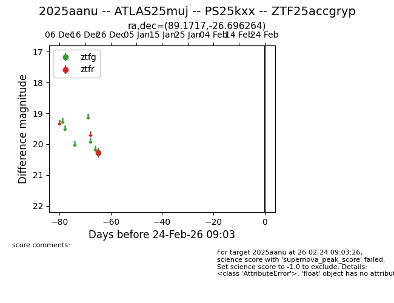
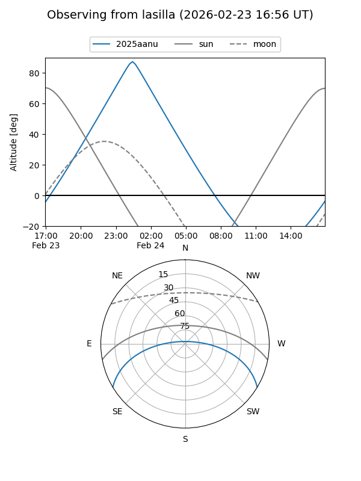
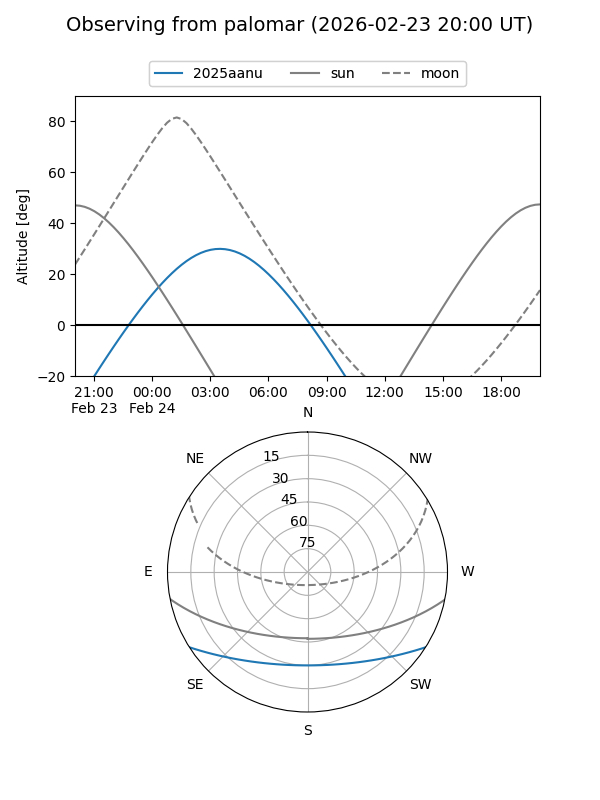

2025aanu
Target 2025aanu at 2025-12-31 00:01
Aliases and brokers:
FINK:
Lasair:
ALeRCE:
TNS:
YSE:
alt names
ZTF25accgryp (ztf,fink_ztf)
2025aanu (tns,yse)
ATLAS25muj (atlas)
PS25kxx (panstarrs)
Coordinates:
equatorial (ra, dec) = 89.1717,-26.69626
equatorial (HMS+DMS) = 05:56:41.21,-26:41:46.55
galactic (l, b) = (232.2002,-23.14158)
Flags:
Photometry:
last ztfr=20.27
1 ztfr detections
Lightcurve

Visibility


Additional plots